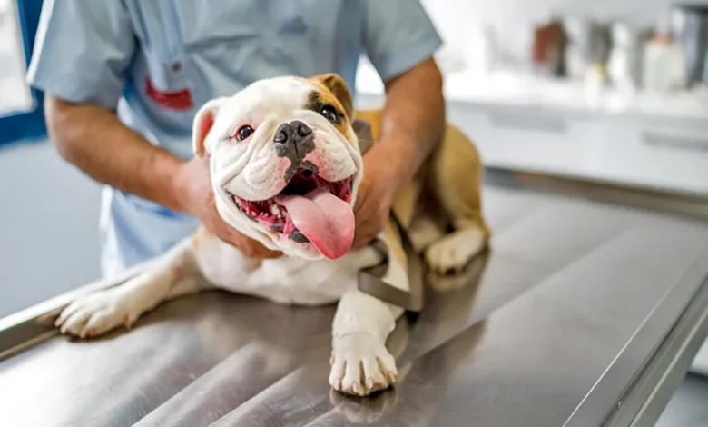
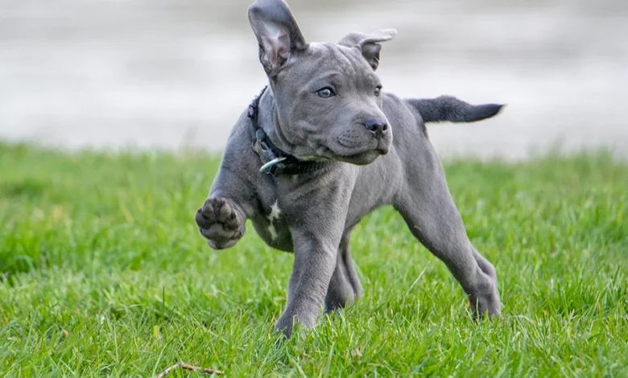
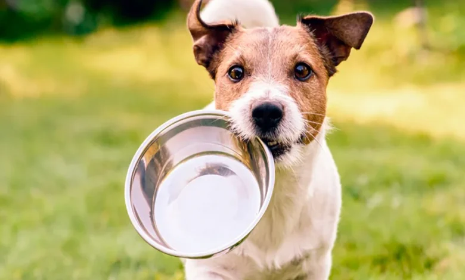
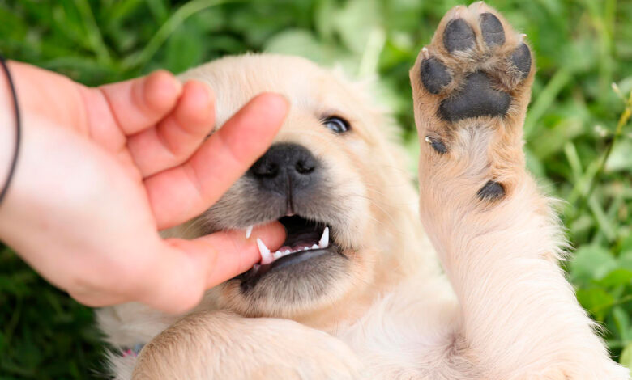
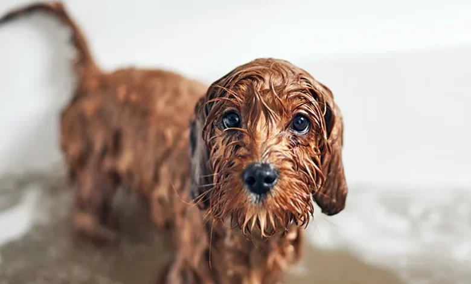

Preguntas Frecuentes
Es importante que recuerdes que la diarrea no es una enfermedad, sino un síntoma de otras
posibles enfermedades. La diarrea puede significar problemas de salud leves como infecciones
de bacterias, pero también puede ser un síntoma de problemas graves como el cáncer,
insuficiencia orgánica o una enfermedad inflamatoria intestinal.
1. Que tu perro haga un ayuno entre 12 y 24 horas. El ayuno es útil para que el sistema digestivo descanse y para que la causa que ha generado la diarrea desaparezca. Ofrécele a tu perro agua permanentemente, incluso si se encuentra en un ayuno temporal.
2. Ofrécele comida blanda y sencilla después del ayuno. Finalmente, considera darle a tu perro una mezcla de arroz, agua y pequeñas cantidades de proteína después de un ataque de diarrea. Pollo hervido con arroz cocido o pasta y los probióticos mezclados en la comida pueden ser una buena alternativa.
3. Lleva a tu perro al veterinario. Si la diarrea de tu mejor amigo es severa, o está acompañada por un dolor abdominal o pérdida de apetito, deberías ir al veterinario para descartar problemas médicos más graves. Asegúrate de poder describir el color, la consistencia, la frecuencia y el olor de las heces de tu perro, ya que son pistas importantes para descubrir qué es lo que tiene tu amigo peludo. Tal vez incluso quieras tomarle una foto o traer una muestra de las heces para que el veterinario las examine
1. Que tu perro haga un ayuno entre 12 y 24 horas. El ayuno es útil para que el sistema digestivo descanse y para que la causa que ha generado la diarrea desaparezca. Ofrécele a tu perro agua permanentemente, incluso si se encuentra en un ayuno temporal.
2. Ofrécele comida blanda y sencilla después del ayuno. Finalmente, considera darle a tu perro una mezcla de arroz, agua y pequeñas cantidades de proteína después de un ataque de diarrea. Pollo hervido con arroz cocido o pasta y los probióticos mezclados en la comida pueden ser una buena alternativa.
3. Lleva a tu perro al veterinario. Si la diarrea de tu mejor amigo es severa, o está acompañada por un dolor abdominal o pérdida de apetito, deberías ir al veterinario para descartar problemas médicos más graves. Asegúrate de poder describir el color, la consistencia, la frecuencia y el olor de las heces de tu perro, ya que son pistas importantes para descubrir qué es lo que tiene tu amigo peludo. Tal vez incluso quieras tomarle una foto o traer una muestra de las heces para que el veterinario las examine
Presta atención a estos consejos básicos que ayudan a prevenir la aparición de estos
parásitos:
1.Revisar el pelaje de tu animal de manera habitual. Sobre todo, en primavera y en verano, cuando garrapatas y pulgas están más activas.
2.Mantener una higiene adecuada. Con cepillados habituales del pelaje y con baños con champú antiparasitario.
3.Desinfección de su caseta. Si tu perro se suele echar una siesta en el jardín, es importante, sobre todo en los meses más cálidos, que mantengas su caseta también desinfectada.
4.Lavar con frecuencia la cama de tu perro. Esto es importante para que no se instalen allí ni pongan huevos.
5.Mantener tu casa limpia. Pasar regularmente la aspiradora tanto en las alfombras como debajo de los sillones y muebles del hogar suma puntos para la prevención global de mascotas y familia.
1.Revisar el pelaje de tu animal de manera habitual. Sobre todo, en primavera y en verano, cuando garrapatas y pulgas están más activas.
2.Mantener una higiene adecuada. Con cepillados habituales del pelaje y con baños con champú antiparasitario.
3.Desinfección de su caseta. Si tu perro se suele echar una siesta en el jardín, es importante, sobre todo en los meses más cálidos, que mantengas su caseta también desinfectada.
4.Lavar con frecuencia la cama de tu perro. Esto es importante para que no se instalen allí ni pongan huevos.
5.Mantener tu casa limpia. Pasar regularmente la aspiradora tanto en las alfombras como debajo de los sillones y muebles del hogar suma puntos para la prevención global de mascotas y familia.
¿Qué hacer cuando un perro gruñe a su dueño?
Detengamos lo que estemos haciendo.
Si el umbral de gruñido de nuestro perro está cerca de su umbral de mordida, debemos detener lo que estemos haciendo y apartarnos de él. En el caso de que el gruñido no signifique una mordedura inminente, nos detendremos, pero nos quedaremos donde estemos.
No obstante, te recomendamos que si deseas modificar esta conducta, lo hagas bajo asesoramiento profesional.
Detengamos lo que estemos haciendo.
Si el umbral de gruñido de nuestro perro está cerca de su umbral de mordida, debemos detener lo que estemos haciendo y apartarnos de él. En el caso de que el gruñido no signifique una mordedura inminente, nos detendremos, pero nos quedaremos donde estemos.
No obstante, te recomendamos que si deseas modificar esta conducta, lo hagas bajo asesoramiento profesional.
Los mejores alimentos para perros son el arroz, las carnes y los pescados y de frutas el
plátano, el melón, la pera y la manzana. En cuanto a las verduras las opciones preferentes
son las espinacas, la zanahoria y la lechuga.